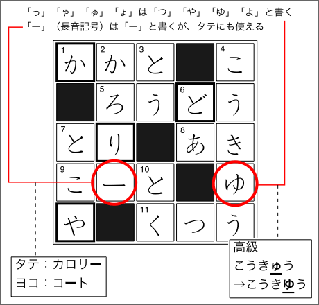

クロスワードパズル
(日本語能力試験２級レベル)
ルール
- 「タテのカギ」と「ヨコのカギ」の問題を解いて、白い□に文字を書く
※カギの問題文はすべて２級相当以下の単語でできている
※特別な注意がない場合、カギの答えはすべて名詞である
- すべての白い□に文字を書いたら、太い□の文字を組み合わせて単語をつくる
※２つ以上の単語ができる場合もある
※１つは２級相当以下の単語ができる
- できた単語を使って例文をつくる
解答するときの注意点
- すべて『ひらがな』で書く
- １マスに１文字を書く
- 「っ」「ゃ」「ゅ」「ょ」は「つ」「や」「ゆ」「よ」と書く
（「きゃ」「がっ」は、［き］［や］／［が］［つ］のようになる）
- 「ー」（長音記号）は「ー」と書くが、タテにも使える
- 清音と濁音は区別する

例題